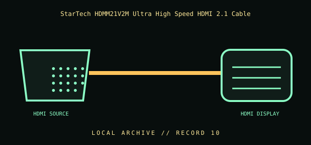

[ INDIVIDUAL COMPONENT // CABLES & ADAPTERS ]
StarTech HDMM21V2M Ultra High Speed HDMI 2.1 Cable
A certified copper HDMI cable for compatible HDMI 2.1-era sources and displays. The cable’s certification does not imply that either connected device supports every HDMI feature.

IDENTIFICATION / SAFETY: Match the complete part number, connector direction, host requirements, and revision to manufacturer documentation. A matching connector shape is not proof of protocol or electrical compatibility.
Specifications
| Catalog subcategory | Display cables and adapters |
|---|---|
| Catalog identity | StarTech.com HDMM21V2M certified Ultra High Speed HDMI cable |
| Protocol / standard | StarTech model HDMM21V2M; Ultra High Speed HDMI cable; manufacturer listing identifies 2 m (6 ft) length and 8K at 60 Hz. The Ultra High Speed cable category is specified for up to 48 Gbit/s when certified and used in a supported system. |
| Connector ends | HDMI SOURCE → HDMI DISPLAY; direction and gender are specified where the manufacturer source verifies them. |
Compatibility & electrical hazards
Both endpoints, their firmware, and the selected mode determine resolution, refresh rate, HDR, VRR, and audio support. Use a certified cable with an intact certification label; avoid sharp bends and do not treat HDMI connector fit as proof of full-bandwidth performance.
Archival & handling notes
Retain the QR/certification label and exact SKU; note the source, display, and tested mode rather than relying on visual inspection. Inspect for crushing and connector strain.
For collection records, photograph both connector faces and all labels; record manufacturer, complete SKU, revision, provenance, condition, and the source document used for identification. Do not apply power to an unidentified or damaged cable.
Sources & further reading
- StarTech — HDMM21V2M Ultra High Speed HDMI cableManufacturer model, 2 m / 6 ft length, and advertised supported display mode.
- HDMI Licensing Administrator — Ultra High Speed HDMI CableOfficial certification and cable-category bandwidth information.
Source values are limited to the linked manufacturer or standards documentation. Features not stated there are intentionally left unspecified; confirm the exact cable revision and host-device manuals before use.